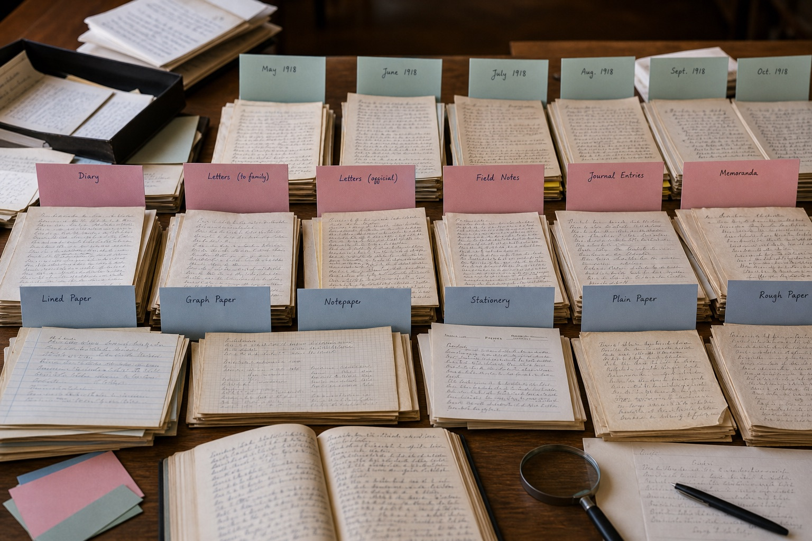

多份手写样本怎样分类整理？
手写样本多起来后，不要急着逐张比较。先把签字、连续正文和随手批注分开，再按时间与使用场景排列，材料之间的关系会清楚很多。

第一步先按内容类型分组
签字、长段正文和页面批注代表不同书写状态。建立三个基础文件夹，再把练习稿、来源不明的截图和看不清的图片放入“待确认”目录。
第二步建立时间顺序
能够确定日期的文件按照年份和月份排列，只知道大致时期的材料单独标注。不要根据纸张新旧或照片颜色自行补一个准确日期。
第三步记录文件载体
原件、复印件、扫描件和手机照片保留的细节不同。清单中注明载体与清晰度，查看时就不会把压缩造成的笔画缺失当成书写特征。
最后制作一张材料清单
清单记录编号、日期、类型、页数、来源和备注。以后新增样本时沿用相同编号规则，不需要重新整理全部文件。
文件夹结构示例
材料较多时，可以直接使用“类型—时间—文件”的三级结构，不必建立过多空目录。
- 第一层：签字、连续正文、批注、待确认材料。
- 第二层：在同类内容中按照年份或阶段建立文件夹。
- 第三层：使用编号保存完整页和细节图，并在总目录放置材料清单。
常见问题
无法确定形成时间怎么办？
标记为“时间待确认”，可以按来源和内容先做临时分组。
模糊照片需要删除吗？
不要删除，单独存放并记录需要重新拍摄的位置。